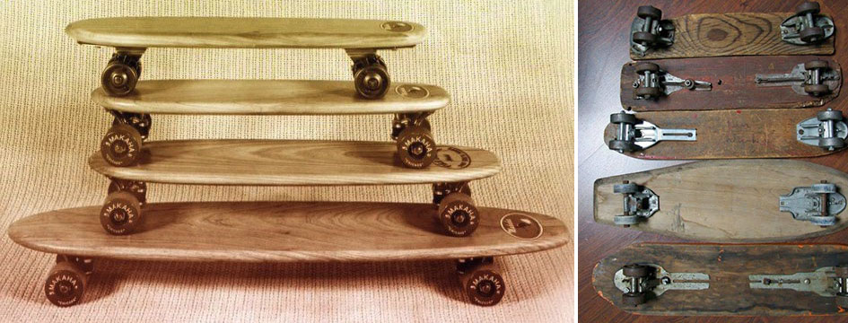

La historia de los skates

La historia del skate es un tanto incierta ya que no hay un momento o una persona única que lo patentara y del que se pueda decir específicamente que fue el inventor del skateboard. El skate nació como algo casual y que fue evolucionando de forma propia hasta convertirse en lo que es hoy en día.
Los 50
Es en los años 50 cuando se tiene constancia de los primeros monopatines. Pero, como hemos dicho, no hay una persona concreta de la que se haya dicho que es el inventor del mismo. Parece que surgió como algo espontáneo de varias personas al mismo tiempo. Fueron los surfers de la zona de California los que, para pasar el rato en días sin olas, decidieron acoplar cuatro ruedas de patines a una simple tabla de madera y “jugar” a surfear el asfalto. Obviamente, estos “skates” eran muy rudimentarios. Se utilizaban ruedas metálicas y únicamente se dedicaban a deslizarse cuesta abajo por las calles emulando los movimientos del surf.
Los 60
En los años 60 la popularidad del skate comienza a crecer y aparecen las primeras compañías especializadas en fabricar patines. Marcas como Jack´s, Hobie y Makaha empiezan a realizar las primeras competiciones. Como es lógico, era un estilo que nada tiene que ver con el skate moderno. Eran años donde las disciplinas reinas eran el slalom y el freestyle. Y, por supuesto, un freestyle muy básico que se asemejaba a una especie de baile con la tabla en los pies.
Los 70
Cuando parecía que todo estaba perdido, ocurrió uno de esos hechos que cambia el curso de todo. Frank Nasworthy inventó las ruedas de uretano en 1973 y fundó la empresa Cadilla Wheels. Estas ruedas hicieron que mucha gente volviera a tener interés por el skate y se volvió a practicar de forma más habitual. Entonces llegó el año 75 y en un campeonato de slalom y freestyle en Del Mar, California el equipo Zephyr enseñó una forma de patinar que no se había visto nunca y mostraron lo que el skate podía llegar a ser. A partir de ese día, se dejó de ver al skateboard como un hobby marginal y pasó a ser algo tomado muy en serio y con muchas posibilidades.
Los 80
Los años 80 supusieron el nacimiento del Skate Moderno, tal y como lo conocemos hoy en día. Se empezó a evolucionar muchísimo en cuento a material y trucos. El Vert era la disciplina más popular, pero a finales de los 80 el street empieza a crecer mucho también.
Podemos decir que los años 80 fueron una de las épocas doradas del patín. Fue la década en la que surgieron marcas míticas como Powell Peralta, Vision, Santa Cruz, Independent, etc
Los 80 coincidieron con el auge del video VHS y los videos de skate hicieron que la popularidad del patín alcanzara cotas internacionales. Mucha culpa de esto la tiene la Bones Brigade, uno de los equipos más legendarios que ha habido y cuyos videos supusieron un antes y un después en la difusión del skateboarding. Proliferan tiendas de skate en todas las ciudades y, con ellas, una legión de jóvenes patinadors.
Los 90
En los 90, la popularidad del skate volvió a caer bastante. El patín se asoció mucho al estilo underground, y los skaters no tenían muy buena reputación. El Vert cayó durante años casi hasta el olvido y, en cambio, el street se desarrolló muchísimo. Jóvenes de todo el mundo asaltaron las calles y aprovecharon cualquier obstáculo del mobiliario urbano para hacer sus trucos. El material, evolucionó hasta prácticamente el skate que conocemos hoy en día. La forma de las tablas se modificó hasta la actual y las ruedas se redujeron enórmemente de tamaño.
2000
A finales de los 90, se produjo la primera celebración de los X-Games. Este hecho supuso un gran empujón mediático para el mundo del skate, y lo puso frente a las grandes audiencias. A partir de ahí, aunque nunca ha perdido su esencia, se dio a conocer como práctica deportiva y espectáculo.
Televisiones, grandes marcas, juegos de consola, etc, se interesaron por el Skate como negocio y como deporte y la industria del skate creció muchísimo en todos los niveles. Esto hizo que los practicantes del skate crecieran muchísimo en número y fuera común la creación de skate parks en ciudades de todo el mundo.
Ahora mismo estamos en un punto, en el skateboard puede entenderse desde muchos puntos de vista. Sigue habiendo skaters en contra de las grandes competiciones, de la exposición mediática y de la industria a grandes rasgos, para los que patinar es un modo de vida… y muchos otros patinadores lo ven como un deporte mucho más profesionalizado, del que ya hay estrellas a nivel de muchos de los deportes tradicionales.